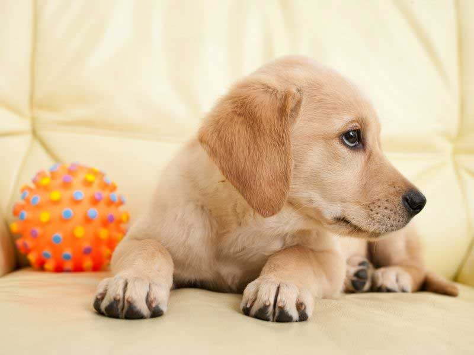

| Početna | O Nama | Saveti Strucnjaka | Galerija | Kontakt |
|---|
Pas labrador retriver je sinonim za lojalnost i privrženost. Ukoliko ste poželeli labradora za ljubimca, upoznajte se sa osobinama ovog psa.
Pas labrador je odličan terapeut koji osobama sklonim depresiji i drugim psihičkim oboljenjima vraća osmeh na lice i volju za životom čineći ga najpouzdanijim prijateljem kojeg čovek može imati pored sebe! Nije slučajno da ćete, osim na reklami, labradore često moći da vidite i u domovima za stare, u bolnicama ili kako pomažu osobama sa posebnim potrebama.
Labrador je snalažljiv i inteligentan, ali i poslušan i privržen pas. Veoma je društven, ali i bezgranično strpljiv.
Obožava da provodi vreme u blizini svoje porodice. Ima nežnu, strpljivu ličnost i voli decu. Iako su pažljivi i strpljivi prema deci, naučite svoju decu da psa ne vuku za rep ili da prilaze psu dok jede.
Labrador će retko ugristi, ali je potreban nadzor posebno kada je u pitanju hranjenje. Iako je sposoban za život van kuće, više voli da provodi vreme uz vlasnika.